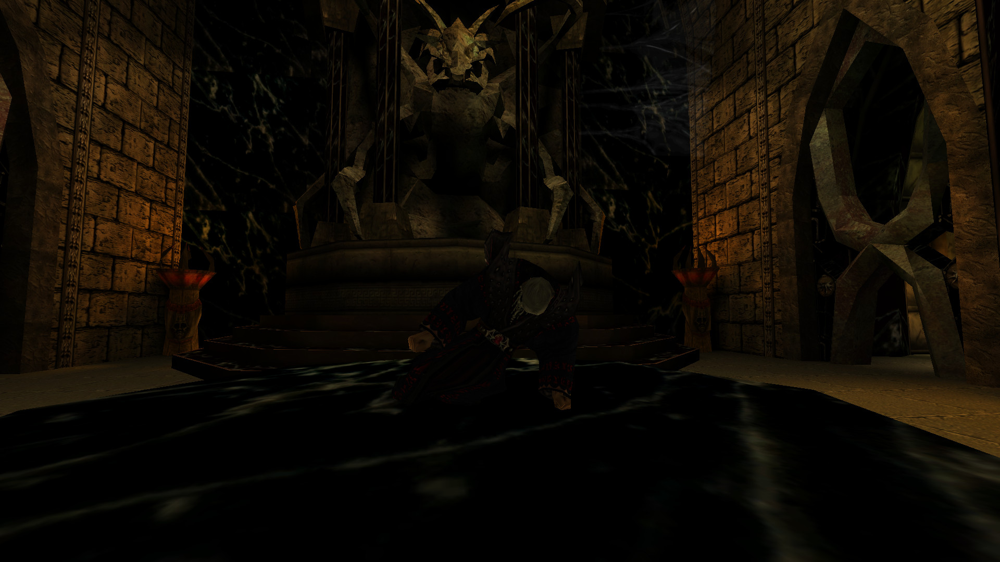
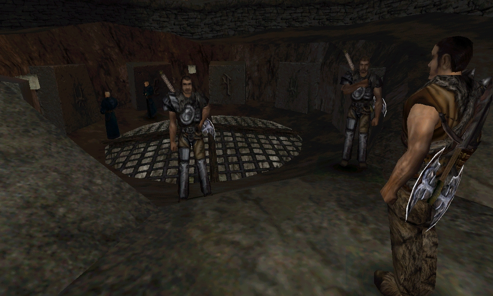
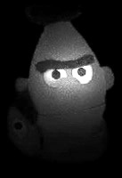

../ Ein Interview mit Mike Hoge
zum 20. Jubiläum von GOTHIC - Part 1
von Phoenix Tales
Ein paar Worte zu diesem "Interview" - das keines war. :)
Ich war davon ausgegangen, dass Florian unser Gespräch aufzeichnet, damit keine Informationen verloren gehen. Florian hatte mir wohl gesagt, dass er die Aufzeichnungen als Interview veröffentlichen wolle, aber ich war von bisherigen Interviews nicht gewohnt, dass man aber auch wirklich jeden Satz wortwörtlich zitiert, inklusive teilweise gruseliger Grammatik und ner Menge Kraftausdrücke, die mir beim freien Reden so rausrutschen.
Ich war ein bisschen baff als ich das "Interview" zum ersten Mal las und merkte, wie schlecht ich mich ausdrücke wenn ich einfach so daherquatsche, aber Florian meinte, es wäre lustig, den Text in dieser Form zu veröffentlichen. Also gibt es nun die (fast) ungefilterte "Mike redet frei Schnauze" Version anlässlich des 20. Jahrestags und (hoffentlich) zu eurer Belustigung!
Außerdem will ich diese Gelegenheit nutzen noch einmal der Community zu danken.
Für die vielen Male, an denen in den letzten Jahren Menschen auf mich zugekommen sind und mir erzählt haben, wie viel Spaß sie mit unseren Spielen hatten.
Für das Engagement die Spiele zu modden, kritisch auseinanderzunehmen, die Lore akribisch nachzuvollziehen und sonst alles, was rund um die Spiele passiert ist.
Und natürlich dafür, die Spiele gespielt zu haben!
Danke!
Mike
Index Part 1
- Xardas Tod
- Zwölf Magier ≠ dreizehn
- OMFull: Der Einsturz der Alten Mine
- Die Treffen der Freunde
- Y'Berions Heiltrank
- Die Aufladung Uriziels
- Das Ritual der Wassermagier
- Der Mord an den Feuermagiern
- Wie sie lernten ein Spiel zu machen
- Die Mad Scientists
Xardas Tod
Florian: Die erste Sache ist Xardas Tod. Es gibt ein Stück von KaiRo, das heißt XardasDeath. Hätte Xardas sterben oder ein Endgegner sein sollen?
Mike: Nein. Das ist eventuell mal im Gespräch gewesen, aber das war nie so geplant. Das hätte ich auch nicht gewollt.
Florian: Du wolltest also auf jedenfall, dass Xardas überlebt?
Mike: Ja. Wie das dann zustande kam, dass Kai sich an das Stück gesetzt hat, weiß ich leider auch nicht mehr.
Zwölf Magier ≠ dreizehn
Mike: Da war ja auch die Geschichte um den dreizehnten Magier, das kennst du ja?
Florian: Das kenn ich.
Mike: Weil er war der zwölfte.
Florian: Xardas, ja.
Mike: Und es gab nur zwölf. Milten ist eigentlich der dreizehnte, der ist neu dazu gekommen. Aber Stefan Nyul war damals der Meinung, dass keiner von den Spielern das begreifen würde, wenn wir das so ins Spiel übernehmen. Dass es die Leute unnötig verwirrt. Und deswegen wurde der dreizehnte Magier daraus.
[OMFull] Der Einsturz der Alten Mine
Florian: Es gab diese vier Story Events am Ende von jedem Kapitel. Das erste ist OMFull, das heißt die Alte Mine hätte einstürzen sollen.
Mike: Ja, unter Wasser sogar, die wäre ja Unterwasser gewesen.
Florian: Wie? Sollte das auch ein Level sein, wo man nochmal reingekommt?
Mike: War bestimmt mal angedacht. Wir hatten ja, wie du weißt selbst Multiplayer Pläne. Wir wollten das Spiel machen, das irgendwie alles kann [lacht].
Florian: Jedenfalls, später im finalen Spiel, gab es dieses FMTaken, also dass die Feuermagier getötet werden und die Mine überfallen wird, das hat man mit diesem Einsturz der Alten Mine kombiniert, ursprünglich war das auf zwei Kapitel aufgeteilt.
Mike: Genau.
Florian: Und dann ist hier zunächst die Frage, ob der Einsturz der Alten Mine mit der Anrufung des Schläfers zu tun hat [aufgrund der ungenutzten Dialoge von Mordrag usw., sind wir uns dessen eigentlich schon sicher].
Mike: Ja, möglich. Aber das ist wirklich Hypothese, ist zu lange her. Ich weiß nur, dass sich das mehrfach geändert hat, das wirst du auch teilweise in den Aufzeichnungen finden. Da steht auch teilweise Blödsinn drin. Zum Beispiel die Gilden waren anders, es wurden welche dazu erfunden, es wurden welche weggelassen, bis wir wirklich dieses finale Bild hatten, das ich rund fand, so ging das ein paar mal hin und her.
Es war klar, dass es diese Lager geben soll, am Anfang hatten wir mal vier geplant, dann doch drei. Die Erzbarone hießen Junta in einer der ersten Versionen usw. Das haben wir dann umbenannt, geändert, es ging über Kreuz und hin und her und wurde solange hingeschoben bis es passte.
Die Treffen der Freunde
Florian: In der Release Fassung kommt man ins Sumpflager, im zweiten Kapitel. Dann spricht dich Lester direkt an und tut so als wärst du ein alter Freund und schickt dich sofort zu Y'Berion um diesen Fokus zu finden. Liegt das daran, dass das Spiel in der finalen Fassung ein wenig auf den Bruderschaftsweg zugeschnitten war, während es ursprünglich verschiedene Pfade hätte geben sollen, die am Ende zum gleichen Ziel führen? So haben wir es in unserem Projekt geplant. Waren da mehr Unterschiede angedacht, je nach Lager?
Mike: Eigentlich war diese Geschichte mit den vier Freunden geplant, die kennst du ja. Diego, Milten, Lester und Gorn, die sich sozusagen noch von früher kennen. Da gibt es ja auch einen Comic drüber usw. Dass die sich lagerübergreifend regelmäßig treffen, Informationen austauschen und dich dann unterstützen. Ein Teil davon ist drin geblieben. Aber diese Präsentation der vier Freunde hat sehr gelitten.
Florian: Diese Treffen hätten also immer wieder im ganzen Spielverlauf stattfinden sollen?
Mike: Genau, da war mehr geplant als wir tatsächlich geschafft haben.
Y'Berions Heiltrank
Florian: Es gibt im Spiel so einen Heiltrank für Y'Berion, der im Spiel aber nicht benutzt wurde. Stattdessen bringt man ihm Kräuter. Hätte er vielleicht überleben sollen? Oder war von Anfang an geplant, dass er stirbt?
Mike: Von Anfang an war es nicht geplant, dass YBerion stirbt. Aber ich kann mich nicht mehr dran erinnern, inwieweit der Heiltrank wichtig war. Es gab mal ne Quest dafür oder sollte eine geben, aber kann ich mich nicht mehr dran erinnern.
Die Aufladung Uriziels
Mike: Tatsächlich ist es so, dass die Hauptstory von Gothic erst in den letzten vier Monaten richtig festgezimmert wurde. Und das letzte Element, das dazu kam, war, dass der Spieler aus dem Erzhaufen die Energie zieht. Das war gar nicht geplant.
Sondern es hat sich erst so ergeben dadurch, dass wir die...
Also historisch gesehen, die Ultra-Zeitraffer-Version: Die erste Idee war: Wir wollen eine Welt machen, die möglichst lebendig ist. Also darf sie nicht zu groß sein, weil der Arbeitsaufwand sonst zu groß wird. Also müssen wir sie sehr einschränken.
Was nehmen wir? Ne kleine Insel? Das ist abgeschmackt, gibt's vielleicht noch was besseres?
Ja so ne Art magische Barriere oder so irgend'ne Art von magischer Begrenzung kam in's Spiel. Und dann kam durch Escape from New York mit Kurt Russell die Idee, nach dem Motto: Oh, Knastwelt, Fantasy, geil! Okay, machen wir erstmal so. Den Rest denken wir uns später aus.
Was wäre dann da? Man brauchte das Erz irgendwie. Und dann müssen wir das tauschen. Da müssen irgendwie neue Menschen rein, aber keiner darf entkommen, also gab's magische Eigenschaften, die wurden dann dem Schläfer zugeschrieben und so weiter. Das hat sich dann alles so zusammen gepuzzelt, sozusagen.
Die drei Lager sind so entstanden, dass es drei unterschiedliche Motivationen geben sollte, damit auch Konflikte entstehen können.
Alex Brüggemann war da sehr pragmatisch. Das war immer super. Er hatte super Designerqualitäten, er hat immer sehr vereinfacht gedacht und hat mich auch sehr oft wieder auf den Teppich gebracht, wenn ich angefangen habe rumzuspinnen. Er hat gemeint: "Es muss ganz einfach sein! Es muss sowas sein wie: Ein Lager will das Erz drin haben. Eines will es raus liefern." Und dann hab ich gedacht: "Ja, stimmt eigentlich."
Und dann haben wir uns hingesetzt und daraus wurde dann: Die einen horten das Erz, weil sie's planen in die Luft zu jagen. War ja eigentlich 'ne schöne Geschichte. Irgendwo liegt dieser bewachte Erzhaufen, im Kern des Lagers usw., die haben sonst nicht viel, nur ein paar ärmliche Pueblo Hütten. Den anderen gehts ein bisschen besser. Die haben die fette Burg, tauschen schön mit dem König, passt. Die Sektenspinner wollen gar nichts von beidem. Die Ressource für die sind Menschen. Die brauchten Gläubige, die brauchten Leute die an ihrer Beschwörung teilnehmen. Also gehen sie in die Lager und rekrutieren. Und dadurch entsteht ein Konflikt.
Aber auf der anderen Seite helfen sie auch, weil sie gehen in die Mine und machen Minecrawler platt, deswegen werden sie geduldet, weißt du? So hatten wir das aufgebaut.
Und dann haben wir uns überlegt, wie die Geschichte weitergehen soll. Man brauchte irgendwie dieses magische Schwert, um den Schläfer zu besiegen. Das ist 'ne coole Quest. Aber er findet es nicht einfach irgendwo, er findet es und muss was damit machen. Er muss es vielleicht noch zusammenbauen oder irgendwie muss er es noch aufladen. Was nehmen wir denn da? Was nehmen wir denn da zum Aufladen? So "leeuuucht". Hmmm... [lacht]
Und dann, dann hat irgendwer... ich weiß gar nicht mehr, entweder André Hotz oder Markus Kark, ich glaube André Hotz, diese geniale Szene gemacht, in der er diesen Haufen leersaugt und alle ihn böse angucken. Da hab ich mich kaputt gelacht, als ich das gesehen hab. Das fand ich richtig gut. Und das ist alles so on-point gemacht worden, in den letzten paar Monaten. Aber aufgrund der Tatsache, dass wir soviel Energie und Zeit ins Setting gesteckt hatten, hat man diese Anknüpfungspunkte überhaupt erst gehabt. Da hat sich die Geschichte dann sozusagen ein bisschen von selbst erzählt.
Das Ritual der Wassermagier
Florian: Dazu habe ich auch eine Frage. Und zwar: Wenn man Saturas diese Foki bringt, in der Christmas Edition, die an Weihnachten kurz vor Release raus kam, da gibt es noch einen Dialog, in dem Saturas sagt: "Du hast es tatsächlich geschafft. Nun können wir mit der Zeremonie anfangen." Das heißt, da gibt's einen Dialog, der nicht mehr drin ist, der anzudeuten scheint, dass sie dieses Ritual tatsächlich gemacht hätten. War das so geplant? Und hat man es dann doch nicht gemacht wegen Uriziel oder warum?
Mike: Ne, weil ich mich kurzfristig nochmal umentschieden hatte und gedacht habe, dass es viel geiler ist für die Story, wenn du dieses... weil das ist so ein Sakrileg, das ist sowas unglaubliches, wenn du hingehst und die sammeln da seit Jahren mühsamst irgendwie diesen Haufen zusammen, ihr ganzer Stolz, weißt du? Ihre Hoffnung zu entkommen.
Und du machst einmal so [macht ein Sauggeräusch]. Weißt du?
Das ist doch einfach irgendwie... das musste sein.
Und da gabs dann auch wieder riesen Diskussionen, weil viele meinten: "Nein! Wir können jetzt nicht mehr umschwenken, wir müssen jetzt beim Plan bleiben, sonst werden wir nicht fertig." Aber das war überhaupt nicht mehr Arbeit. Der Film muss gemacht werden, so oder so, scheiß drauf, paar Dialoge weniger, zack, viel geiler. Fertig.
Florian: Ursprünglich hätten sie das Ritual dann gemacht, aber es wäre schief gegangen.
Mike: Es war nie geplant, dass die Barriere von den Wassermagiern zerstört wird. Das wäre grandios in die Hose gegangen, ja.
Florian: Aber dann ist es ja so, dass im finalen Spiel Saturas dich erst zu den Feuermagiern schickt, dass die dich unterstützen. Hätte das auch so drin sein sollen? Weil hier wird eher angedeutet sie machen's allein.
Mike: Das weiß ich nicht mehr. Das sind alles so halb fertige Ideen gewesen. Die sind nie richtig ausgearbeitet worden. Es ist nie so gewesen, dass es ein Skript gab für den fertigen Ablauf des Spiels, das dann nochmal geändert worden wäre, sondern es ist sozusagen immer direkt implementiert worden.
Florian: Ja, das dachte ich mir, dass das alles so... einfach lief.
Mike: Man könnte es chaotisch nennen. Ich nenne es eine interessante Dynamik [lacht].
Der Mord an den Feuermagiern
Florian: Aber erinnerst du dich, ob es von Anfang an geplant war, dass die Feuermagier von Gomez getötet werden?
Mike: Nein. Das war nicht so geplant. Das kam auf jedenfall auch erst im Laufe der Geschichte.
Wie sie lernten, ein Spiel zu machen
Wie gesagt, wir waren ja damit beschäftigt, das Spiel zum Laufen zu kriegen. Das heißt wir brauchten jede Menge Monster, die mussten eine eigene Kampf-AI haben, die mussten eigene Animationen haben. Du musstest mit den Waffen gut kämpfen können. Verstehst du? Irgendwo gibts immer irgendwelche kleinen Haken. Du musst das Spiel zum Laufen bringen. Das eigentliche Everyday-Life des Spielers, Items aufsammeln, Monster töten, mit Typen quatschen, das musste erstmal alles vernünftig funktionieren. Und bugfrei, einigermaßen. Naja gut... Hat ja so halbwegs funktioniert mit dem Nachpatchen [schmunzelt].
Zu der Frage. Es hat sich, wie gesagt, alles in den letzten Monaten zusammengefügt und wir haben das dann so gemacht, wie wir es in der Zeit geschafft haben und wie wir es am coolsten fanden. Und vorher haben wir sehr viel Zeit darauf verwendet, überhaupt die Systeme zum Laufen zu kriegen. Man hat nicht die Möglichkeit eine Story zu implementieren, wenn bestimmte Mechaniken noch nicht da sind. Du kannst einen Dialog schreiben. Du kannst sagen: "Geh in den Wald und töte drei Wölfe." Dann ist da kein Wald und dann sind da keine drei Wölfe. Dann kannst du irgendwie ein Game Event faken, dass du so eine Dialogoption schreibst: "Ja, ich habe die Wölfe getötet." Und dann kannst du die nächste freischalten und kannst dir sehr viel Arbeit machen wegen nichts und am Ende wird doch nochmal alles ein bisschen anders, verstehst du?
Das heißt, wenn du nicht dein Handwerkszeug sozusagen fertig hast, kannst du das Ding auch nicht produzieren. Das ist auch so ein in gewisser Weise linearer Ablauf. Du kannst zwar einige Sachen parallelisieren und mit mehr Erfahrung heutzutage, wie solche Projekte heute laufen, ist es auch viel einfacher. Aber wir waren ja damals einer der ersten Entwickler, die so'nen Wahnsinn gemacht haben. Was gab es da? Da gab es die Ultima Reihe. Da gab es Ultima 9, das erste 3D Ding. Und dann gab es ne Menge 3D Hack'n'Slay Geschichten, die sind bei weitem nicht so komplex gewesen. Wir haben uns sozusagen als Anfänger... gut, wir hatten ein bisschen Erfahrung. Jeder hatte ein paar Jährchen Branchenerfahrung, aber wir haben uns dann natürlich direkt die Königsklasse der Spieleentwicklung geschnappt, ein fettes 3D Rollenspiel. Und dann gemeint wir schaffen das schon. Und dementsprechend haben wir auch länger gebraucht um alles irgendwie zum Laufen zu kriegen, die Firma richtig zu strukturieren, die Abläufe usw.
Alles war total chaotisch. Wir mussten alles nach und nach lernen. Und uns hat das Lehrgeld damals sozusagen der Egmont Ehapa Verlag gezahlt... Egmont Interactive - Ehapa Verlag, weißt du ja, Asterix und diese ganzen Comic Serien ist alles von Ehapa -, die wollten halt mit ihrem Geld was anderes machen und konnten im Comic Markt nicht mehr wachsen und sind deswegen zu uns gekommen und haben uns finanziert, in der Hoffnung in den Computerspielemarkt zu kommen. Da sind sie ausgerechnet an uns geraten. Und nachdem sie dann mit uns fertig waren hatten sie auch keine weiteren Pläne mehr mit Computerspielen Geld zu verdienen [lacht]. Aber das Gute war, dass Gothic 2 dann die Million, die Gothic 1 verbrannt hat, wieder reingeholt hat. Da waren wir +-0 in der Bilanz.
Florian: Und das ja in ziemlich kurzer Zeit. Gothic 1 vier Jahre oder so und Gothic 2... aber da war halt auch alles schon fertig, das Gerüst sozusagen.
Mike: Ja genau, das ist ja das was ich meine. Wenn du dein Handwerkszeug da liegen hast und weißt wie die Abläufe sind, dann kannst du das auch relativ schnell produzieren. Aber wir hatten ja das alles nicht. Wir hatten nichts. Wir hatten einen weißen Zettel.
Die Mad Scientists
Florian: Und wie war dann das Verhältnis zu den Mad Scientists? Die haben ja auch 'ne große Rolle gespielt.
Mike: Die Mad Scientists haben eine ganz entscheidende Rolle gespielt. Ohne sie hätte es das erstens gar nicht gegeben, das Projekt. Nicht nur die Engine nicht, sondern überhaupt die Möglichkeit. Denn wir hatten damals wohl kreative Leute da und einen der technisch ein bisschen versiert war, Stefan Nyul, der auch programmieren konnte, aber er hat ja keine eigene Engine aus dem Boden stampfen können.
Und diese drei - damals waren es noch Studenten -, kommen zu uns und sagen: Wir wollen ein 3D Rollenspiel machen. Und wir haben gesagt: Geil. Die kamen mit sowas wie Ultima Underworld an. Und wir haben gesagt: Ja wieso nicht think big? Lass uns mal lieber 'ne geile Oberwelt machen mit ein paar Dörfern und so. Und die: "Ne ey! Seid ihr bekloppt?! Das wird viel zu groß und viel zu viel." Ne, ach Quatsch, das geht schon, kein Problem [lacht]. Wir machen das schon.
Und dann haben sie sich darauf eingelassen und kurz vor Ende, wirklich ein halbes Jahr vor Ende kamen sie zu mir und haben gesagt: "Mike, tut mir leid, aber wir müssen jetzt hier weg. Unser Leben ist seit drei Jahren auf Pause". Und "du musst das jetzt verstehen. Wir müssen jetzt mal mit unserem Studium weitermachen." Und ich hab gesagt: "Nein, das könnt ihr nicht bringen. Wir sind so kurz davor das fertig zu machen. Dann war alles umsonst." - "Ja wir haben uns aber unterhalten, das hat keinen Zweck mehr, wir hören auf." Ich so: "Was? Seid ihr bekloppt? Das könnt ihr nicht machen. Die Rechtsabteilung von Phenomedia, die nimmt euch auseinander Alter. Ihr werdet mit eurem Leben nicht mehr froh." Stimmte gar nicht. War'n Bluff...
Dann haben die weiter gemacht. Danach war das Verhältnis nicht mehr so gut. Aber ich hab drei Jahre mir den Arsch aufgerissen für diese Scheiße und ich hatte keinen Bock auf den letzten Monaten zu verkacken. Und ich bin da nicht stolz drauf, dass es so gelaufen ist, aber es ist so gelaufen. Ich hatte wirklich in dem Moment Angst, dass alles umsonst war. Das war ein ganz brisanter Moment.
Florian: Passiert ja sehr oft, dass ein Spiel eingestellt wird, nachdem schon soviel Zeit reingeflossen ist...
Mike: [seufzt] ...
Florian: Aber haben die nur die Engine gemacht oder hatten die auch so ein bisschen mit der Story zu tun oder haben versucht da Einfluss zu nehmen?
Mike: Hm ne. Haben die nicht. Die haben bestimmt mal eine Idee geäußert oder sowas, aber die armen Schweine hatten gar keine Zeit dafür, sich über sowas wie Story Gedanken zu machen. Die waren so ausgelastet, haben sich da so einen Wolf programmiert, also das muss man auch wirklich mal anerkennend sagen.
Florian: Auf jedenfall, das ist ziemlich cool, was die auf die Beine gestellt haben.
Mike: Es gab noch Carsten Edenfeld, der hat auch noch mitgemacht und der hat auch noch einiges gerissen. Aber die Hauptarbeit in Punkto Programmierung haben die Mad Scientists gemacht. Punkt. Und wie gesagt, ohne die hätt's das gar nicht gegeben. Das will ich wirklich nochmal explizit so betonen.
[ Das Gespräch fand am 30.01.2021 statt und wurde abgetippt von Florian. Die kursiven Hervorhebungen entsprechen der Betonung von Mike. Zum zweiten Teil gehts hier... [soon] ]